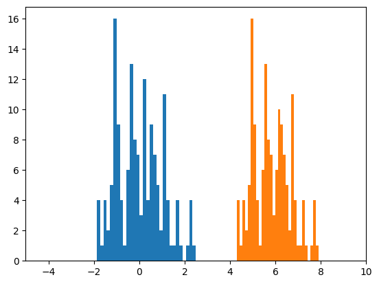
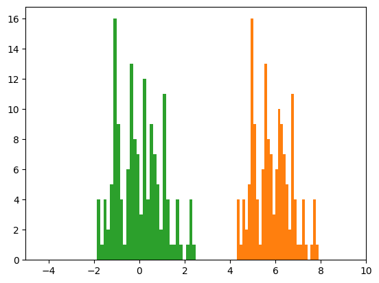
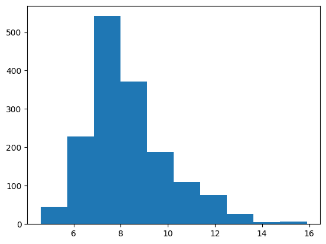

from sklearn.datasets import load_iris
from sklearn.preprocessing import StandardScaler
from sklearn.preprocessing import MinMaxScaler
import pandas as pd
import matplotlib.pyplot as plt # viz
import seaborn as sb # viz
import numpy as npiris = load_iris().data
iris[:,0].min()4.3array([[5.1, 3.5, 1.4, 0.2],
[4.9, 3. , 1.4, 0.2],
[4.7, 3.2, 1.3, 0.2],
[4.6, 3.1, 1.5, 0.2],
[5. , 3.6, 1.4, 0.2],
[5.4, 3.9, 1.7, 0.4],
[4.6, 3.4, 1.4, 0.3],
[5. , 3.4, 1.5, 0.2],
[4.4, 2.9, 1.4, 0.2],
[4.9, 3.1, 1.5, 0.1],
[5.4, 3.7, 1.5, 0.2],
[4.8, 3.4, 1.6, 0.2],
[4.8, 3. , 1.4, 0.1],
[4.3, 3. , 1.1, 0.1],
[5.8, 4. , 1.2, 0.2],
[5.7, 4.4, 1.5, 0.4],
[5.4, 3.9, 1.3, 0.4],
[5.1, 3.5, 1.4, 0.3],
[5.7, 3.8, 1.7, 0.3],
[5.1, 3.8, 1.5, 0.3],
[5.4, 3.4, 1.7, 0.2],
[5.1, 3.7, 1.5, 0.4],
[4.6, 3.6, 1. , 0.2],
[5.1, 3.3, 1.7, 0.5],
[4.8, 3.4, 1.9, 0.2],
[5. , 3. , 1.6, 0.2],
[5. , 3.4, 1.6, 0.4],
[5.2, 3.5, 1.5, 0.2],
[5.2, 3.4, 1.4, 0.2],
[4.7, 3.2, 1.6, 0.2],
[4.8, 3.1, 1.6, 0.2],
[5.4, 3.4, 1.5, 0.4],
[5.2, 4.1, 1.5, 0.1],
[5.5, 4.2, 1.4, 0.2],
[4.9, 3.1, 1.5, 0.2],
[5. , 3.2, 1.2, 0.2],
[5.5, 3.5, 1.3, 0.2],
[4.9, 3.6, 1.4, 0.1],
[4.4, 3. , 1.3, 0.2],
[5.1, 3.4, 1.5, 0.2],
[5. , 3.5, 1.3, 0.3],
[4.5, 2.3, 1.3, 0.3],
[4.4, 3.2, 1.3, 0.2],
[5. , 3.5, 1.6, 0.6],
[5.1, 3.8, 1.9, 0.4],
[4.8, 3. , 1.4, 0.3],
[5.1, 3.8, 1.6, 0.2],
[4.6, 3.2, 1.4, 0.2],
[5.3, 3.7, 1.5, 0.2],
[5. , 3.3, 1.4, 0.2],
[7. , 3.2, 4.7, 1.4],
[6.4, 3.2, 4.5, 1.5],
[6.9, 3.1, 4.9, 1.5],
[5.5, 2.3, 4. , 1.3],
[6.5, 2.8, 4.6, 1.5],
[5.7, 2.8, 4.5, 1.3],
[6.3, 3.3, 4.7, 1.6],
[4.9, 2.4, 3.3, 1. ],
[6.6, 2.9, 4.6, 1.3],
[5.2, 2.7, 3.9, 1.4],
[5. , 2. , 3.5, 1. ],
[5.9, 3. , 4.2, 1.5],
[6. , 2.2, 4. , 1. ],
[6.1, 2.9, 4.7, 1.4],
[5.6, 2.9, 3.6, 1.3],
[6.7, 3.1, 4.4, 1.4],
[5.6, 3. , 4.5, 1.5],
[5.8, 2.7, 4.1, 1. ],
[6.2, 2.2, 4.5, 1.5],
[5.6, 2.5, 3.9, 1.1],
[5.9, 3.2, 4.8, 1.8],
[6.1, 2.8, 4. , 1.3],
[6.3, 2.5, 4.9, 1.5],
[6.1, 2.8, 4.7, 1.2],
[6.4, 2.9, 4.3, 1.3],
[6.6, 3. , 4.4, 1.4],
[6.8, 2.8, 4.8, 1.4],
[6.7, 3. , 5. , 1.7],
[6. , 2.9, 4.5, 1.5],
[5.7, 2.6, 3.5, 1. ],
[5.5, 2.4, 3.8, 1.1],
[5.5, 2.4, 3.7, 1. ],
[5.8, 2.7, 3.9, 1.2],
[6. , 2.7, 5.1, 1.6],
[5.4, 3. , 4.5, 1.5],
[6. , 3.4, 4.5, 1.6],
[6.7, 3.1, 4.7, 1.5],
[6.3, 2.3, 4.4, 1.3],
[5.6, 3. , 4.1, 1.3],
[5.5, 2.5, 4. , 1.3],
[5.5, 2.6, 4.4, 1.2],
[6.1, 3. , 4.6, 1.4],
[5.8, 2.6, 4. , 1.2],
[5. , 2.3, 3.3, 1. ],
[5.6, 2.7, 4.2, 1.3],
[5.7, 3. , 4.2, 1.2],
[5.7, 2.9, 4.2, 1.3],
[6.2, 2.9, 4.3, 1.3],
[5.1, 2.5, 3. , 1.1],
[5.7, 2.8, 4.1, 1.3],
[6.3, 3.3, 6. , 2.5],
[5.8, 2.7, 5.1, 1.9],
[7.1, 3. , 5.9, 2.1],
[6.3, 2.9, 5.6, 1.8],
[6.5, 3. , 5.8, 2.2],
[7.6, 3. , 6.6, 2.1],
[4.9, 2.5, 4.5, 1.7],
[7.3, 2.9, 6.3, 1.8],
[6.7, 2.5, 5.8, 1.8],
[7.2, 3.6, 6.1, 2.5],
[6.5, 3.2, 5.1, 2. ],
[6.4, 2.7, 5.3, 1.9],
[6.8, 3. , 5.5, 2.1],
[5.7, 2.5, 5. , 2. ],
[5.8, 2.8, 5.1, 2.4],
[6.4, 3.2, 5.3, 2.3],
[6.5, 3. , 5.5, 1.8],
[7.7, 3.8, 6.7, 2.2],
[7.7, 2.6, 6.9, 2.3],
[6. , 2.2, 5. , 1.5],
[6.9, 3.2, 5.7, 2.3],
[5.6, 2.8, 4.9, 2. ],
[7.7, 2.8, 6.7, 2. ],
[6.3, 2.7, 4.9, 1.8],
[6.7, 3.3, 5.7, 2.1],
[7.2, 3.2, 6. , 1.8],
[6.2, 2.8, 4.8, 1.8],
[6.1, 3. , 4.9, 1.8],
[6.4, 2.8, 5.6, 2.1],
[7.2, 3. , 5.8, 1.6],
[7.4, 2.8, 6.1, 1.9],
[7.9, 3.8, 6.4, 2. ],
[6.4, 2.8, 5.6, 2.2],
[6.3, 2.8, 5.1, 1.5],
[6.1, 2.6, 5.6, 1.4],
[7.7, 3. , 6.1, 2.3],
[6.3, 3.4, 5.6, 2.4],
[6.4, 3.1, 5.5, 1.8],
[6. , 3. , 4.8, 1.8],
[6.9, 3.1, 5.4, 2.1],
[6.7, 3.1, 5.6, 2.4],
[6.9, 3.1, 5.1, 2.3],
[5.8, 2.7, 5.1, 1.9],
[6.8, 3.2, 5.9, 2.3],
[6.7, 3.3, 5.7, 2.5],
[6.7, 3. , 5.2, 2.3],
[6.3, 2.5, 5. , 1.9],
[6.5, 3. , 5.2, 2. ],
[6.2, 3.4, 5.4, 2.3],
[5.9, 3. , 5.1, 1.8]])rango = iris[:,0].max() - iris[:,0].min()
rango3.6000000000000005media = iris[:,0].mean()
media.round(3)
np.mean(iris[:,0])5.843333333333334s = iris[:,0].std()
s0.8253012917851409z_iris0 = (iris[:,0] - media) / s
z_iris0.mean().round(3)
z_iris0.std()1.0plt.hist(z_iris0, bins=30);
plt.xlim(-5, 10)
plt.hist(iris[:,0], bins=30);
Usando StandardScaler
scaler = StandardScaler()
z_scaled = scaler.fit(iris).transform(iris)
z_scaled[:,0].mean()-1.4684549872375404e-15plt.hist(z_iris0, bins=30);
plt.xlim(-5, 10)
plt.hist(iris[:,0], bins=30);
plt.hist(z_scaled[:,0], bins=30);
# pairsplot
# para crear un dataframe de novo
iris_df = pd.DataFrame(data=data.data,
columns=data.feature_names)
iris_df| sepal length (cm) | sepal width (cm) | petal length (cm) | petal width (cm) | |
|---|---|---|---|---|
| 0 | 5.1 | 3.5 | 1.4 | 0.2 |
| 1 | 4.9 | 3.0 | 1.4 | 0.2 |
| 2 | 4.7 | 3.2 | 1.3 | 0.2 |
| 3 | 4.6 | 3.1 | 1.5 | 0.2 |
| 4 | 5.0 | 3.6 | 1.4 | 0.2 |
| ... | ... | ... | ... | ... |
| 145 | 6.7 | 3.0 | 5.2 | 2.3 |
| 146 | 6.3 | 2.5 | 5.0 | 1.9 |
| 147 | 6.5 | 3.0 | 5.2 | 2.0 |
| 148 | 6.2 | 3.4 | 5.4 | 2.3 |
| 149 | 5.9 | 3.0 | 5.1 | 1.8 |
150 rows × 4 columns
df_wine = pd.read_csv("/home/mrrobot/Documents/GitHub/AEM-ITESO/datasets/winequality_red.csv")
df_wine| fixed acidity | volatile acidity | citric acid | residual sugar | chlorides | free sulfur dioxide | total sulfur dioxide | density | pH | sulphates | alcohol | quality | |
|---|---|---|---|---|---|---|---|---|---|---|---|---|
| 0 | 7.4 | 0.700 | 0.00 | 1.9 | 0.076 | 11.0 | 34.0 | 0.99780 | 3.51 | 0.56 | 9.4 | 5 |
| 1 | 7.8 | 0.880 | 0.00 | 2.6 | 0.098 | 25.0 | 67.0 | 0.99680 | 3.20 | 0.68 | 9.8 | 5 |
| 2 | 7.8 | 0.760 | 0.04 | 2.3 | 0.092 | 15.0 | 54.0 | 0.99700 | 3.26 | 0.65 | 9.8 | 5 |
| 3 | 11.2 | 0.280 | 0.56 | 1.9 | 0.075 | 17.0 | 60.0 | 0.99800 | 3.16 | 0.58 | 9.8 | 6 |
| 4 | 7.4 | 0.700 | 0.00 | 1.9 | 0.076 | 11.0 | 34.0 | 0.99780 | 3.51 | 0.56 | 9.4 | 5 |
| ... | ... | ... | ... | ... | ... | ... | ... | ... | ... | ... | ... | ... |
| 1594 | 6.2 | 0.600 | 0.08 | 2.0 | 0.090 | 32.0 | 44.0 | 0.99490 | 3.45 | 0.58 | 10.5 | 5 |
| 1595 | 5.9 | 0.550 | 0.10 | 2.2 | 0.062 | 39.0 | 51.0 | 0.99512 | 3.52 | 0.76 | 11.2 | 6 |
| 1596 | 6.3 | 0.510 | 0.13 | 2.3 | 0.076 | 29.0 | 40.0 | 0.99574 | 3.42 | 0.75 | 11.0 | 6 |
| 1597 | 5.9 | 0.645 | 0.12 | 2.0 | 0.075 | 32.0 | 44.0 | 0.99547 | 3.57 | 0.71 | 10.2 | 5 |
| 1598 | 6.0 | 0.310 | 0.47 | 3.6 | 0.067 | 18.0 | 42.0 | 0.99549 | 3.39 | 0.66 | 11.0 | 6 |
1599 rows × 12 columns
minmax_scaler = MinMaxScaler()
# scaled_data = minmax_scaler.fit(df_wine).transform(df_wine)
scaled_data = minmax_scaler.fit_transform(df_wine)
scaled_data = pd.DataFrame(data=scaled_data, columns=df_wine.columns)
scaled_data| fixed acidity | volatile acidity | citric acid | residual sugar | chlorides | free sulfur dioxide | total sulfur dioxide | density | pH | sulphates | alcohol | quality | |
|---|---|---|---|---|---|---|---|---|---|---|---|---|
| 0 | 0.247788 | 0.397260 | 0.00 | 0.068493 | 0.106845 | 0.140845 | 0.098940 | 0.567548 | 0.606299 | 0.137725 | 0.153846 | 0.4 |
| 1 | 0.283186 | 0.520548 | 0.00 | 0.116438 | 0.143573 | 0.338028 | 0.215548 | 0.494126 | 0.362205 | 0.209581 | 0.215385 | 0.4 |
| 2 | 0.283186 | 0.438356 | 0.04 | 0.095890 | 0.133556 | 0.197183 | 0.169611 | 0.508811 | 0.409449 | 0.191617 | 0.215385 | 0.4 |
| 3 | 0.584071 | 0.109589 | 0.56 | 0.068493 | 0.105175 | 0.225352 | 0.190813 | 0.582232 | 0.330709 | 0.149701 | 0.215385 | 0.6 |
| 4 | 0.247788 | 0.397260 | 0.00 | 0.068493 | 0.106845 | 0.140845 | 0.098940 | 0.567548 | 0.606299 | 0.137725 | 0.153846 | 0.4 |
| ... | ... | ... | ... | ... | ... | ... | ... | ... | ... | ... | ... | ... |
| 1594 | 0.141593 | 0.328767 | 0.08 | 0.075342 | 0.130217 | 0.436620 | 0.134276 | 0.354626 | 0.559055 | 0.149701 | 0.323077 | 0.4 |
| 1595 | 0.115044 | 0.294521 | 0.10 | 0.089041 | 0.083472 | 0.535211 | 0.159011 | 0.370778 | 0.614173 | 0.257485 | 0.430769 | 0.6 |
| 1596 | 0.150442 | 0.267123 | 0.13 | 0.095890 | 0.106845 | 0.394366 | 0.120141 | 0.416300 | 0.535433 | 0.251497 | 0.400000 | 0.6 |
| 1597 | 0.115044 | 0.359589 | 0.12 | 0.075342 | 0.105175 | 0.436620 | 0.134276 | 0.396476 | 0.653543 | 0.227545 | 0.276923 | 0.4 |
| 1598 | 0.123894 | 0.130137 | 0.47 | 0.184932 | 0.091820 | 0.239437 | 0.127208 | 0.397944 | 0.511811 | 0.197605 | 0.400000 | 0.6 |
1599 rows × 12 columns
plt.hist(df_wine.iloc[:,0]) # cuando es dataframe, llamar columna con iloc
plt.show()
plt.hist(scaled_data.iloc[:,0])
(array([ 45., 229., 542., 371., 188., 110., 76., 26., 5., 7.]),
array([0. , 0.1, 0.2, 0.3, 0.4, 0.5, 0.6, 0.7, 0.8, 0.9, 1. ]),
<BarContainer object of 10 artists>)
scaler = MinMaxScaler()
z_scaled = scaler.fit(iris).transform(iris)
z_scaled[:,0].mean()